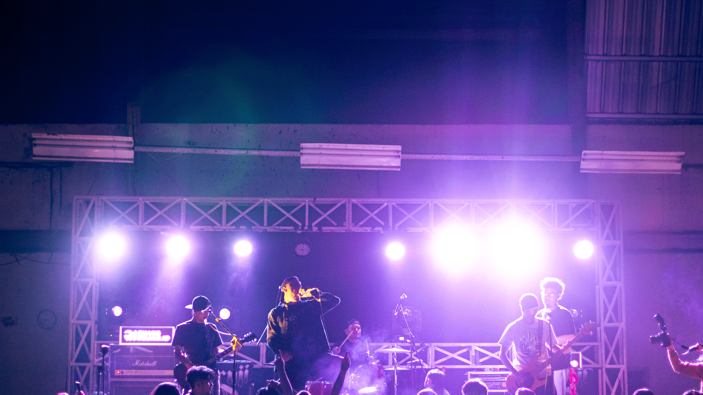
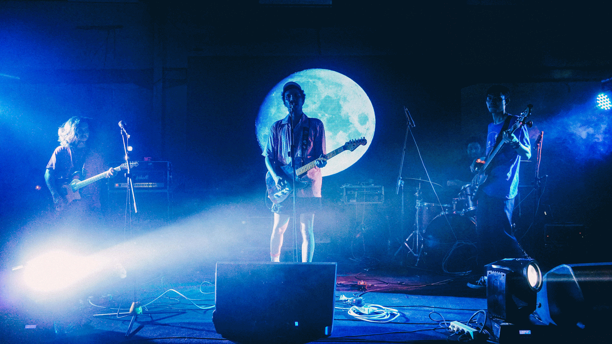
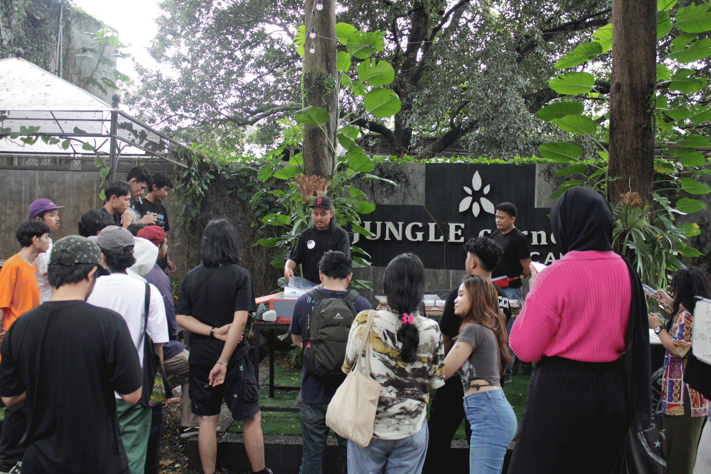
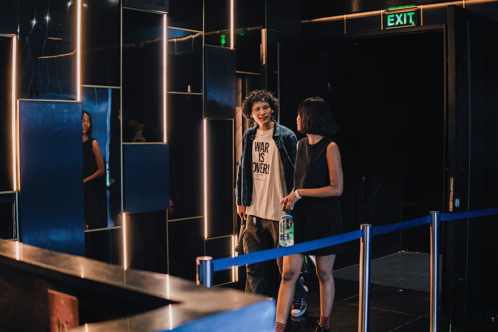

Program

Program ini telah dilaksanakan sejak tahun 2018 dimeriahkan oleh penampilan dari dalam dan luar kota yang turut serta meramaikan. Ojo kesusu diharapkan bisa menjadi tempat untuk membingkai geliat ekosistem musik underground di wilayah suburban, berperan sebagai penghubung cekpoint bagi musisi luar kota dengan presentasi yang selalu menarik perhatian di setiap gelaran konsernya.

Sebuah perayaan yang khusus ditujukan untuk mengapresiasi dan merayakan warna keberagaman pada pemajuan kancah musik lokal, diselenggarakan oleh Noirlab yang bertindak sebagai penyelenggara dan kurator program, tidak hanya sekedar perayaan Yalla yalla pun tumbuh menjadi ruang bagi musisi-musisi emerging untuk dapat mempresentasikan karyanya ke khalayak yang lebih luas dengan paparan pertunjukan yang layak.

Forum jual beli sekitaran transyogie yang rutin mengadakan pasar - pasaran dengan paket lengkap kegiatan penunjang pergaulan remaja pinggir ibu kota seperti talkshow, workshop serta musik.

Konser musik intim dengan serangkaian sesi rekaman live, sekaligus menjadi bahan pengarsipan karya berbasis digital bagi musisi - musisi dalam dan luar negri.